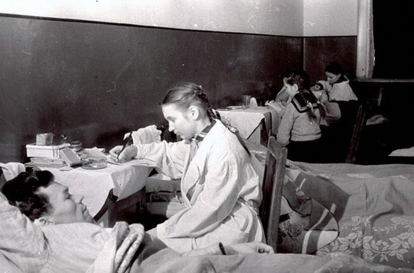
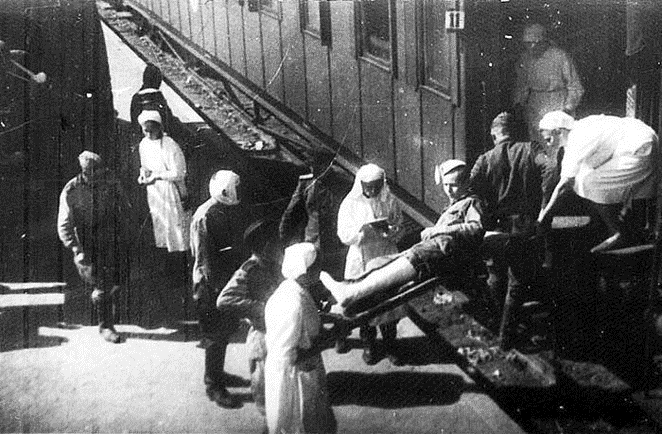
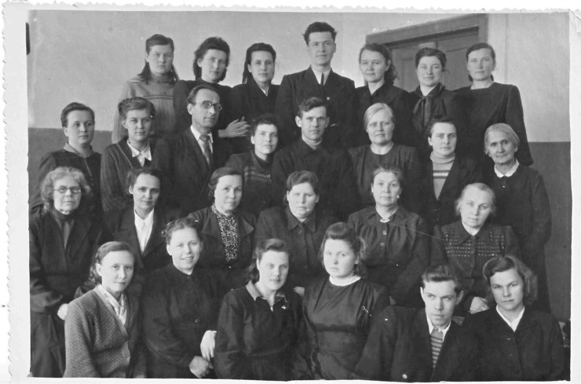
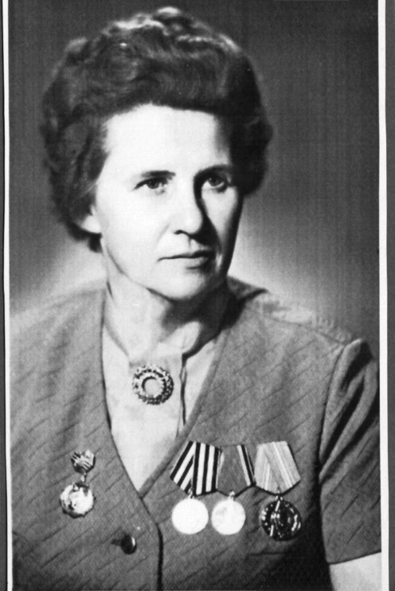
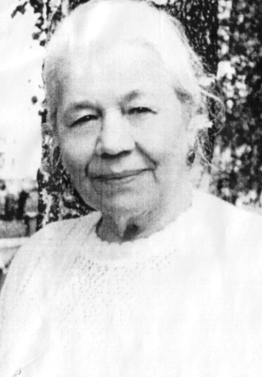
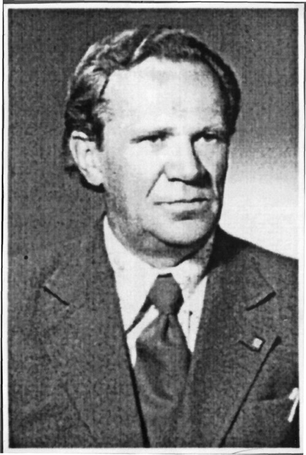

• В сентябре 1941 года был сформирован эвакогоспиталь № 1538. Со дня своего основания госпиталь находился в двух зданиях: в трехэтажном кирпичном здании педагогического института по улице Маяковского (ныне ул. С. Орлова), 6 и в здании школы № 33 (ныне школа № 8) по адресу: набережная Свободы (ныне ул. Мира), 22. В этих помещениях располагались 3 терапевтических и 4 хирургических отделения.

• В трудные военные годы лозунг был «Все для фронта, все для победы!» А в городе часто не было света, учились в три смены, сидели с керосиновыми лампами. Бойцы писали школьникам так: «Учитесь, ребята, мы стоим на защите Родины, а вы отличными оценками бьете с тыла врага»


Учитель
физкультуры,
участник Великой Отечественной войны

Учитель
начальных классов.
Смирнова Нина Ивановна

Учитель
русского языка и литературы.
Чезлов Николай Васильевич